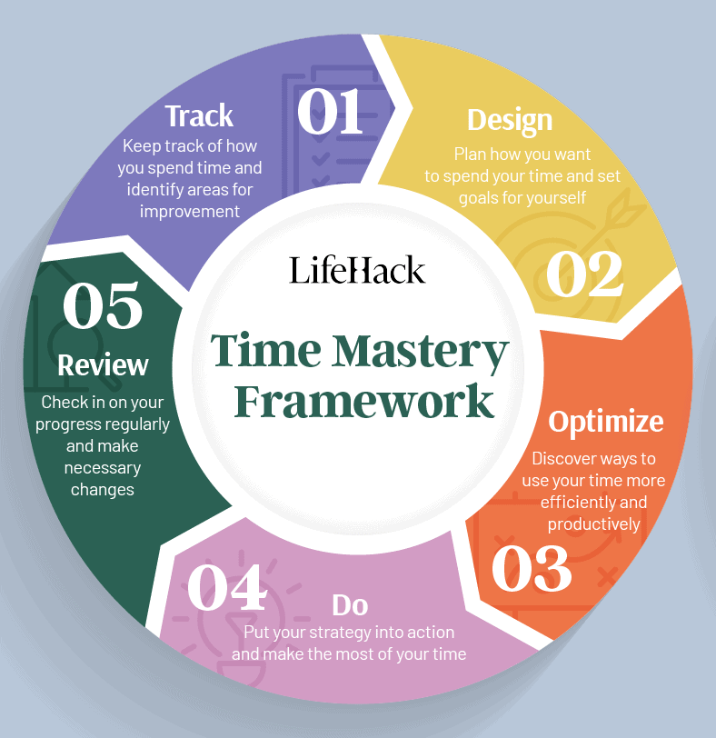

Do you feel as though you don’t have enough time? And you’re not really in control of time, is it? We have no control over how quickly time passes; especially with so many demands on our time and energy for everyday matters, we can easily feel overwhelmed and swept. As a result, we may feel helpless or as if time is working against us. While you can’t control time itself, you can control how you spend it. It is much preferable to spend one hour of high quality time on things that are important to you than ten hours doing things that are not time-worthy. When it comes to time, quality is always more important than quantity. In this article, you will learn how to improve your quality of time and take back control of your day with Lifehack’s unique framework on time management.
The Time Mastery Framework is a framework I’ve gradually developed since
starting Lifehack.
The Time Mastery Framework is a 5-step Framework:
1:Track – It is keeping track of how you are currently spending your time
in order to identify areas where you could improve.
2:Design – It entails making a plan for how you want to spend your time
and setting goals for yourself.
3:Optimize – This refers to discovering ways to use your time more
efficiently and productively.
4:Do – It is all about putting your strategy into action and making the
most of your time.
5:Review – It entails checking in on your progress on a regular basis and
making any necessary changes to your plan.

Time may appear to be uncontrollable, but there are things you can do to
maximize your time and feel more in control of your life.
By being mindful of how you spend your time, setting priorities and
creating a plan, you can make the most of the time you have.